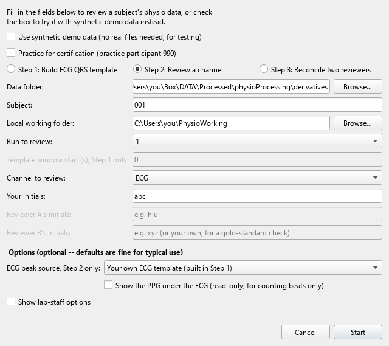
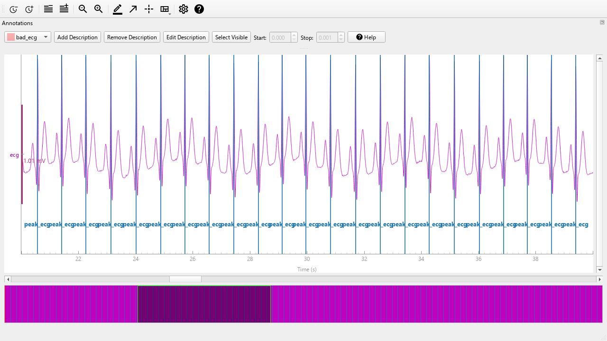
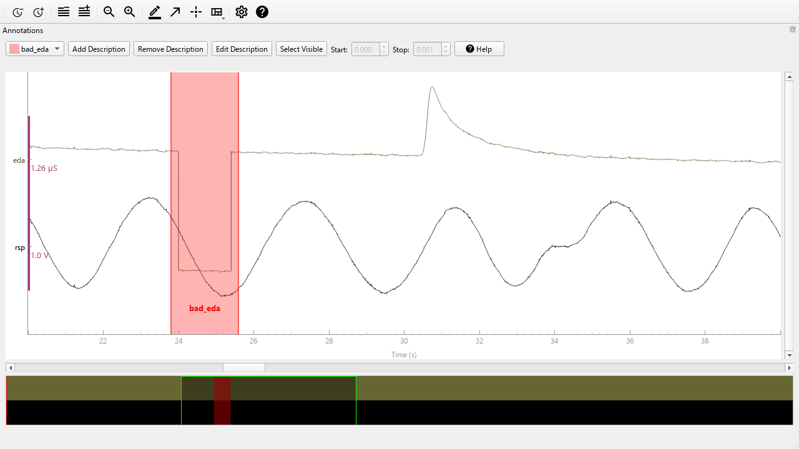
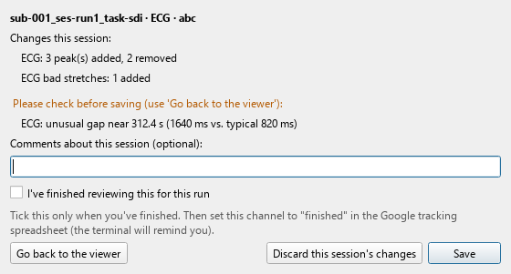
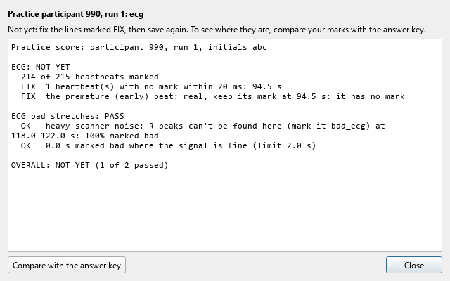

Physiology in the Emotion, Brain & Behavior Lab
Please Eyeball Before Believing Labels.
Our studies record several body signals at once: heartbeat, finger pulse, breathing, sweat and blood pressure. A computer finds the heartbeats and flags stretches that look unusable, but it makes mistakes. PEBBL shows you each recording with the computer's marks on it, and you check them by eye and fix them. Two research assistants check each recording separately, and a reconciler then settles any disagreements.
PEBBL never changes the recordings. It saves your marks in a separate file next to the recording in the data folder (for our lab, on Box), named with your initials.
The work comes in three steps, which you pick in PEBBL's form:
On a lab computer, PEBBL is already installed. Skip to step 6 (make your own working folder), then start PEBBL with the PEBBL icon on the desktop. Sign in to Box Drive with your own account if it asks.
On your own computer, allow about 30 minutes, mostly waiting. You need an internet connection and permission to install programs. Wherever these steps say YOU, use your own username on that computer.
Python is the programming language PEBBL is written in. You won't need to write any code.
Open python.org/downloads/release/python-3119, scroll to Files, and download Windows installer (64-bit). Run it. On its first screen, tick Add python.exe to PATH, then click Install Now.
Open the same page and download macOS 64-bit universal2 installer. Open it and click through the installer.
Use 3.11 even if a newer Python exists: PEBBL's parts are matched to it. Having other versions installed too is fine.
Git downloads PEBBL and keeps it up to date.
Download Git from git-scm.com/download/win, run it, and accept every default (keep clicking Next, then Install).
Open Terminal (press ⌘ Space, type Terminal, press Return). Type git --version and press Return. If a window offers to install the command line developer tools, click Install.
PEBBL reviews recordings kept in a data folder: any folder on your computer, a network drive or a cloud drive, organized as in section 10. In our lab it's on Box. If the computer doesn't have Box Drive yet, install it from box.com/resources/downloads and sign in with your Tufts account. Then check that you can open the lab's physio folder:
If you can't see the DATA folder, ask the lab staff for access. For another study, the people running it will tell you where its data folder is.
Open PowerShell: Start menu, type PowerShell, press Enter.
Open Terminal: press ⌘ Space, type Terminal, press Return.
Paste these two lines, pressing Enter (Return on a Mac) after each:
cd ~ git clone https://github.com/tufts-ebbl/pebbl.git
This makes a folder called pebbl in your home folder. Leave it there. Don't move it into OneDrive, iCloud, Box or a synced Desktop or Documents folder: they would try to sync PEBBL's 1 GB of parts.
In File Explorer, open C:\Users\YOU\pebbl and double-click Set up PEBBL.bat.
In Terminal, paste this and press Return:
bash ~/pebbl/setup_pebbl.sh
A window shows progress for 5 to 15 minutes and ends with PEBBL is set up. If it ends with Setup didn't finish, take a photo of the window and send it to the lab staff.
Make an empty folder called PhysioWorking in your home folder (C:\Users\YOU\PhysioWorking, or /Users/YOU/PhysioWorking on a Mac). While you work, PEBBL copies one participant's files here, and it deletes the copy once your work is safely back in the data folder. On a shared computer, everyone makes their own.
Double-click Start PEBBL.bat in the pebbl folder. For a desktop shortcut, right-click it → Send to → Desktop (create shortcut).
Double-click Start PEBBL.command in the pebbl folder (Finder → Go → Home → pebbl). To keep it handy, drag it to the right-hand end of your Dock.
Each time, PEBBL first checks for updates, then opens its form. A text window (the terminal) stays open behind the form, and PEBBL writes notes there during your session. After each session the form opens again; click Cancel on it to close PEBBL. Don't close the terminal until it says PEBBL has closed.
In the form, tick Use synthetic demo data, type your initials, choose Step 2 and click Start. You get made-up practice data with no real participant in it, so explore freely: nothing you do here is kept.
| You see | What to do |
|---|---|
| Python 3.11 isn't installed | Install it as in step 1. On Windows, use the python.org installer, not the Microsoft Store version. |
| git is not recognized | Install Git (step 2), then close PowerShell or Terminal and open it again. |
| Couldn't update PEBBL | Usually no internet connection. PEBBL still starts with the version you have; tell the lab staff if it keeps happening. |
| Mac: Start PEBBL.command won't open | Run bash ~/pebbl/setup_pebbl.sh again; it makes the file runnable. |
| Anything else | Take a photo of the window and send it to the lab staff. |
jkl. They name your files. The first time you use them, PEBBL asks you to confirm them. If it warns that sub looks like the start of a subject ID, check what you typed.You mark two kinds of things. Peaks are single points, one per heartbeat or pulse. Bad stretches are spans of time where a signal can't be trusted. A stretch you leave unmarked in a finished review counts as checked and clean.
| Channel | What it is | What you mark |
|---|---|---|
| ECG | The heart's electrical activity, from stickers on the chest. Each heartbeat makes one tall, sharp spike: the R peak. | A peak on every R peak |
| PPG | The pulse in a fingertip, from the CareTaker finger cuff. Each heartbeat makes one smooth wave, reaching the finger a fraction of a second after the R peak. | A peak on every pulse |
| RSP | Breathing, from a stretchy belt around the torso. One rise and fall per breath. | Bad stretches |
| EDA | Skin conductance: tiny changes in sweat on the hand. Smooth rises lasting a few seconds are real responses. | Bad stretches |
| SBP, DBP | Blood pressure, measured at every heartbeat by the finger cuff: the upper number (systolic) and the lower (diastolic), in mmHg. | Bad stretches |
| Event | Which part of the task was running: 0 is outside the task, other numbers are task phases. | Nothing (context only) |
Some channels also show a guide row underneath: another signal shown for context, which you can't mark. Section 6 says how to use each one.

Click Start. PEBBL copies the participant's files to your working folder and opens the viewer. Read the notes in the terminal window: they say what's already marked and anything special about this recording.

| To | Do this |
|---|---|
| Page through the run | Shift + → moves one full screen, → a quarter. Or drag the scroll bar, or click the overview strip at the very bottom. |
| Start marking | Press a for annotation mode. A bar appears with a label list. |
| Read an exact value | Press x, then hover. The value and time show at the bottom. |
| Hide the task markers | Press e. |
| See every shortcut | Click the ? button in the toolbar. |
Check the label before every drag. The label list often starts on a bad-stretch label such as bad_ecg. A drag made with the wrong label makes the wrong kind of mark.


PEBBL then copies your file back to the data folder, checks it arrived, and deletes the local copy. Then the form opens again, ready for your next session. Update the tracking spreadsheet after each session. When you're done for the day, click Cancel on the form and wait for PEBBL has closed before closing the terminal window.
You can stop partway. Save without ticking finished. Next time, start PEBBL with the same participant, run, channel and initials, and it picks up where you left off.
Step 1 first, once per participant. PEBBL shows 20 seconds of ECG with the computer's R peaks. Fix them and close the window. A preview then shows your beats as gray lines with their average in black. Click Approve Template if the beats line up. If they're messy, click Try a Different Window and run Step 1 again with Template window start set to 20 (then 40, and so on).
The finger-pulse (PPG) guide row is off under ECG. You can turn it on in the form, but only for counting beats, never for deciding where an R peak goes: the pulse arrives a different time after each R peak in every run.
The computer's dropouts start marked as bad_ppg, and peaks inside them aren't loaded. Delete or shrink a marked stretch if the pulse there is clearly fine.
The review starts with the computer's flags; check each one. The EDA guide row underneath helps: a rise in EDA 1 to 3 seconds after a big breath shows the breath was real. Never mark RSP bad because of EDA.
The breathing guide row underneath helps: a rise right after a big breath is a real response, not bad signal. Mark EDA bad only where the EDA itself is unusable.
The review starts with the computer's marks: no reading, values out of range, SBP less than 10 above DBP, and no usable finger pulse. The finger-pulse guide row underneath shows why the last kind matters: where there's no usable pulse, the pressure values aren't real.
EMG and finger temperature aren't collected yet, so PEBBL leaves them out.
Before you work on real data, you practice on participant 990. It's a made-up recording: a computer simulated every channel, so no real person is in it. The computer's marks on it include deliberate mistakes, and a few spots look odd but are real. PEBBL keeps an answer key with it, the gold standard for where every peak and bad stretch belongs. The key is exact because the recording was built from it. Each time you save a practice review, PEBBL compares your marks with the key.
It's near the top of the form. PEBBL fills in subject 990 and uses the practice folder next to your data folder. Keep your usual data folder, working folder and initials. Step 3 isn't part of practice.
As in section 6. Step 1 isn't scored, but your Step 2 heartbeats start from it.
The lab staff tell you which runs and channels to practice. Review as you would real data, and save.
After you save, a score window opens. Each channel gets PASS or NOT YET. Each FIX line says what's wrong and where, in seconds from the start of the run.

Click Compare with the answer key to open the viewer with your marks and the key's together. Labels ending _agree are where you match the key. Labels ending _only_key are marks you missed, and labels ending in your initials are marks the key doesn't have. This view is only for looking: nothing you change in it is saved.
Start Step 2 again for the same run and channel. PEBBL picks up from your last save. Fix the FIX lines, save, and repeat until the channel passes.
| Marks | To pass |
|---|---|
| Peaks (ECG, PPG) | Every heartbeat or pulse has a mark within 20 ms (ECG) or 30 ms (PPG) of the key's, and there are no extra marks. On a two-humped pulse, either hump counts. Beats inside a stretch you correctly marked bad don't need marks. |
| Bad stretches (all channels) | At least 80% of each real artifact is marked bad. Real signal that looks odd, and the computer's mistaken marks, are no more than 25% marked. In all, no more than 2 seconds are marked bad where the signal is fine. Up to 2 seconds on either side of a finger-pulse dropout count as part of it. |
When every channel you practiced passes, tell the lab staff. Your score is also saved in your session log, so they can check it there.
For reconcilers. Choose Step 3, the run and channel, your own initials, and the two reviewers' initials. Each mark shows with one of three labels: agreed by both (_agree), only the first reviewer, or only the second. Delete marks you don't believe, add anything both missed using the _added label, and leave agreed marks alone. Save as usual. For PPG, two marks on one pulse must be fixed before PEBBL lets you save.
y to copy them there.In our lab, the processing pipeline already lays out the Box folder this way, so RAs can skip this section. It's for lab staff, and for anyone setting up PEBBL for another study.
The data folder holds one folder per participant. Each run of a recording sits in its own folder, with a JSON file of the same name beside it:
data folder/
sub-001/
ses-run1/
beh/
sub-001_ses-run1_task-sdi_physio.tsv.gz
sub-001_ses-run1_task-sdi_physio.json
ses-run2/
beh/
sub-001_ses-run2_task-sdi_physio.tsv.gz
sub-001_ses-run2_task-sdi_physio.json
sub-002/
…
SamplingFrequency in Hz and the Columns, in order. PEBBL uses columns named ecg, ppg, rsp, eda, sbp, dbp and event. It also uses ecg_peaks and ppg_peaks: 1 where the computer marked a peak, 0 elsewhere. A recording can have only some of these columns.PEBBL adds its own files beside each recording, named with the reviewer's initials. It keeps a processing_log.csv in the data folder. For certification, a practice folder sits next to the data folder.